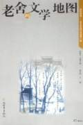

百家讲坛全集
>
百家讲坛2004
>
百家讲坛 老舍的文学地图

名称：
集数：
播出时间：
百家讲坛 老舍的文学地图
7
2004年06月08日
分集介绍
《百家讲坛》 老舍的文学地图 （一） 旗人作家老舍
播出时间：
主讲人：
介绍：
2004年06月08日
关纪新
《百家讲坛》 老舍的文学地图 （二） 老舍的幽默
播出时间：
主讲人：
介绍：
2004年06月09日
孔庆东
《百家讲坛》 老舍的文学地图 （三） 悦耳的老舍
播出时间：
主讲人：
介绍：
2004年06月10日
范亦豪
《百家讲坛》 老舍的文学地图 （四） 《茶馆》的文化符号
播出时间：
主讲人：
介绍：
2004年06月11日
关纪新
《百家讲坛》 老舍的文学地图 （五） 老舍笔下的新旧市民
播出时间：
主讲人：
介绍：
2004年06月15日
吴福辉
《百家讲坛》 老舍的文学地图 （六） 沉重的《月牙儿》
播出时间：
主讲人：
介绍：
2004年06月16日
范亦豪
《百家讲坛》 老舍的文学地图 （七） 老舍之死
播出时间：
主讲人：
介绍：
2004年06月17日
傅光明